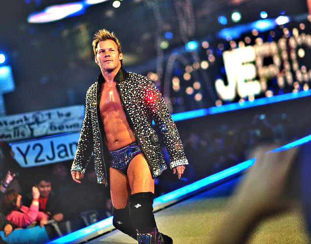
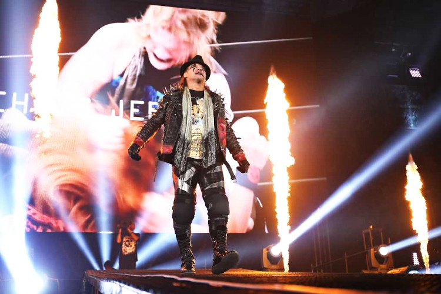

Pro wrestling is a strange sport, in any other sport there are few people running to be the greatest of all time. However, things are different in pro wrestling where dozens of people are running to be the greatest. If you ask a basketball fan who the greatest to ever play the sport is, the main two answers would be either Michael Jordan or LeBron James. In pro wrestling however finding the greatest is a different ball game whatsoever, who people consider the greatest is completely subjective. It depends on the era when you started watching and really understanding wrestling, it depends on who you can connect with the most.
Chris Jericho has done it all in his career. He went from revealing himself as the man of 1004 holds to putting Shawn Michaels through the JeriTron 6000. He was the coward who beat babyface up when they had their back turned against him. He was a cool heel whom the people loved to cheer. He was the master of turning simple words into catchphrases. In his long-storied career, Jericho has changed his in-ring persona more than one can count. He has wrestled all over the world and has success around multiple promotions. Chris Jericho may not be the greatest in ring performer or the promo artist of all time but coming as a WCW guy he still laced up his boots against the odds of Attitude era's main event superstars The Rock, Triple H, Steve Austin, to name a few. And, when it comes to the mic, he could go toe to toe with the greatest in the likes of The Rock, Stone Cold. When it comes to reinventing himself he is one of the best if not the very best.

When Jericho debuted, he had "come to save the World Wrestling Federation", referring to himself as "Y2J” which was a play on the Y2k bug which probably shows that the "Y2J" character shouldn't have had success. Most pro wrestling fan born after the millennium don’t even know what Y2k is, but the fact that 15 -20 years later people are still chanting Y2J shows how amazing he is when it comes to connecting with the crowd. Chris Jericho played a pivotal role as a heel and "the man of 1004 holds" in building the WCW's cruiserweight division. Chris Jericho was also a key figure in helping WWE beat WCW during the Monday Night Wars. His feud with Shawn Michaels showed that he could perform his part in a long-term feud. His ability to turn anything over with the crowd was phenomenal. The list of Jericho, Festival of Friendship and the feud with Kevin Owens were the last things he did in WWE and it was by far the most entertaining things he did in his career and in pro wrestling at that time.

Chris Jericho returned to NJPW in 2018 showing the world that he could still stand with the best and hardest hitters of pro wrestling in the likes of Tetsuya Naito, Hiroshi Tanahasi and Kazuchika Okada. At the age of 50 he even had a 5-star match with Kenny Omega. What makes Chris Jericho so great is the fact that the Jericho in NJPW doesn't have any resemblance with the one in WWE. When AEW was announced, the signing of Chris Jericho brought legitimacy to the promotion. In AEW, Jericho leads a faction called Inner circle and the other great thing is, the AEW Jericho is completely different from that of NJPW or WWE. Currently, Jericho is helping build and uplift other talents. AEW has only been going for over a year and in a year Jericho has given us some of the best moments and matches in his career.
When we look back on Chris Jericho's career, we can see that he is an excellent promo artist, one of the best performers and one of the best storytellers but the thing that will stand out the most is his ability to reinvent himself. Jericho over his career has had like 5 different characters which are completely different from each other. How many pro wrestlers in the Illustrious history of pro wrestling can say that they have reinvented themselves successfully and frequently as Jericho has?
Hey there, are you looking at this section? Looks like you have a lot of time, don’t you? The site's name is Wrestle Article, what do you think it is about? If you still don't, this site is about the writer’s view on pro wrestling. That's about it. What else do you want, go read some articles. Oh, wait we write about MMA and make memes too. Take a look at that too.